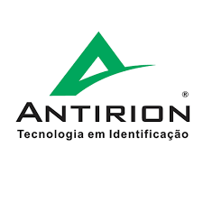

Meus Contatos

 1136919@atitus.edu.br
1136919@atitus.edu.br
Sempre tive uma forte conexão com a música e a criatividade, desfrutando do processo de criação, seja de objetos ou composições musicais. Meu interesse em aprender e explorar novas habilidades sempre foi uma constante em minha vida. Fui atraído pelo mundo da computação, especialmente pela sua diversidade e pelas inúmeras funcionalidades que oferece. A paixão por jogos e tecnologia também influenciou essa escolha. Atualmente, trabalho em uma empresa que mantém uma estreita relação com a minha faculdade, o que proporciona um ambiente de aprendizado contínuo. Essa sinergia entre trabalho e estudo tem sido fundamental para o meu desenvolvimento, contribuindo tanto para o aprofundamento dos conhecimentos adquiridos em sala de aula quanto para as experiências práticas no ambiente profissional.
Tenho um forte interesse em criar e desenvolver funcionalidades, jogos e diversas aplicações. Minha paixão pelo desenvolvimento se estende também ao campo de redes e hardware, áreas nas quais venho me aprofundando através de experiências práticas no trabalho. Busco constantemente a oportunidade de criar soluções que possam transformar a rotina de outras pessoas. Meu objetivo é ser contratado por uma empresa de renome, onde eu possa contribuir com inovação e qualidade em meus projetos, impactando positivamente o ambiente profissional e a vida dos usuários.
Estudei por 12 anos no Instituto Educacional Metodista, onde finalizei o Ensino Médio no EENAV. Em 2023, ingressei na faculdade de Computação, um passo decisivo na minha trajetória profissional. Atualmente, sou empregado na Antirion, onde tenho a oportunidade de aprimorar meus conhecimentos e aprofundar meu interesse na área de computação. Na Antirion, trabalho com hardware de dispositivos de ponto eletrônico, adquirindo um entendimento profundo das funcionalidades essenciais de diversos equipamentos e tecnologias. Além disso, minha experiência inclui o aprendizado sobre redes, computação em nuvem e introdução ao desenvolvimento de software. Essa combinação de conhecimentos técnicos tem sido fundamental para o meu crescimento profissional e para a aplicação prática do que aprendo na faculdade.

1136919@atitus.edu.br